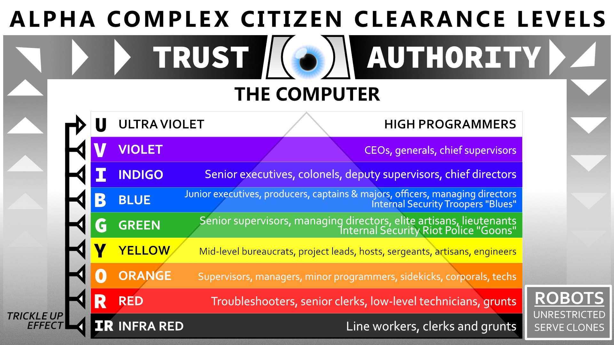

Note: By Central Processing mandate 214.02.01.751, all citizens are required to bookmark this page to avoid unnecessary repetition of the decanting process.
The Computer has promoted you from your previous INFRARED Clearance to your new and exciting RED Clearance. Your new security clearance signifies The Computer’s benevolent trust in you. The Computer is your friend.
All citizens are required to wear clothing of the same color as their security clearance. As an INFRARED you wore black. With your new RED Clearance The Computer has thoughtfully provided a new red jumpsuit and boots. Wear them at all times. Failure to comply is treason.
(EXCEPTION: You may temporarily remove all or part of your clothing for hygienic purposes such as showering. Good hygiene is essential to good citizenship. Poor hygiene is insubordination.)
The Computer determines each citizen’s clearance with complete impartiality. Higher clearance means greater responsibility; it also brings benefits. The Computer cares for the needs of all citizens, of course, but it rewards most greatly those who sacrifice the most for the sake of society and their fellow beings.
Citizens of higher clearance are not necessarily more knowledgeable or capable than you. They have advanced solely because they selflessly served the greater good and earned The Computer’s trust. Admire, respect and defer to higher-clearance citizens. Failure to defer at all times is insubordination and may be treason.
If you serve The Computer well, you will earn its greater trust and thereby advance in security clearance. Aspire to advance! Seek to serve Alpha Complex in ever greater ways! Failure to aspire may be considered insubordination.
To ensure that only citizens of the requisite competence and trustworthiness have access to restricted areas, The Computer has divided Alpha Complex into colored areas. Citizens may only enter areas of their clearance or lower. You must stay within black (INFRARED) and RED areas at all times. Failure to do so is treason.
Long ago, in Old Reckoning times before The Computer began guiding Alpha Complex—before Alpha Complex even existed!—humans once reproduced by rutting, like vile animals. Shudders and expressions of revulsion are permitted, though not mandatory.
Because The Computer cares deeply for all citizens, it now grows them in clone tanks. This is much less messy and disgusting than the old way, and far less random. The Computer ensures every human citizen is genetically perfect in all respects. Improved by a program of mandatory hormone suppressants, human citizens are no longer troubled by the bestial urges of past generations.
The Computer’s researchers in R&D continue to pioneer stunning advances in cloning technology. Earlier generations of citizens were grown in ‘clone families’ of six genetically identical siblings, all decanted from the tanks at the same time. When they died, their precious genetic heritage was lost to Alpha Complex. Today, thanks to advances in forced-growth cloning technology, The Computer’s loyal servants in Technical Services can now produce new clone copies of any citizen at will.
R&D’s amazing MemoMax technology can copy and transfer the deceased citizen’s memories to a new clone with speed and absolute accuracy. Tech Services installed your MemoMax circuitry before you were decanted, and it functions perfectly today.
The rare citizen of Alpha Complex who meets an untimely demise must sometimes wait for resources to become available to grow a new replacement body. In contrast, as a Troubleshooter you enjoy The Computer’s fullest consideration.
Though you need not expect unusual hazards as you locate and terminate the last remaining vicious Communist enemies of Alpha Complex, The Computer has thoughtfully ordered for you five ready backup clones and a MemoMax Constant Realtime Update Priority link. The CRUP link ensures the highest priority for your return to action.
To maintain good order, The Computer has enlisted many loyal citizens like yourself. Those who serve with distinction are shining examples for all right-thinking people in Alpha Complex. In the ongoing ‘Heroes of Our Complex’ (HOOC) initiative The Computer periodically recognizes and honors meritorious individuals of all clearances. These lucky friends of The Computer see their smiling faces on evening vidshows, transtube loyalty posters and food containers.
For example, this month’s HOOC honoree reduced waiting time by 22.3% on a perline basis in her PLC subsector warehouse routing office through the simple yet ingenious expedient of subdividing the single line for each security clearance into three separate alphabetical lines indexed by weekday and devising a schedule designating visiting days for each alphabetical segment of customers. For this HOOC-worthy innovation, congratulations to NAME DELETED per IntSec corrective order following discovery of treasonous history.
Serve The Computer well, and you too may join NAME DELETED per IntSec corrective order following discovery of treasonous history!
The Computer also attends regretfully to the pervasive presence of traitors. Traitors are everywhere! Though final crushing victory over Communist subversion is close at hand, the traitors’ last shrill treason-laden gasps still endanger their innocent victims. Fight on, Troubleshooter, fight on for The Computer and all Alpha Complex!
Locate and apprehend or destroy unregistered mutants. They endanger human genetic purity and must be terminated or enlisted in our great cause.
Do not terminate registered mutants, innocent citizens who realized they possess, through no fault of their own, a treasonous mutant power. These unwitting traitors promptly reported their power to The Computer. In its wisdom and benevolence, The Computer forgives those who make full confession, and it permits registered mutants to live. However, The Computer requires registered mutants to wear a uniform with yellow stripes at all times. (YELLOW Clearance mutants wear a black-bordered yellow stripe.) Registered mutants are not subject to apprehension or termination when they use their powers. Encourage these former traitors to use their inhuman powers responsibly, for the good of all Alpha Complex, so they may someday overcome their unfortunate terrible stigma.
Locate and apprehend or destroy members of secret societies. They are traitors, often terrorists, and must be brought to justice.
The existence of many secret societies is public knowledge. It is not technically illegal to discuss their treasonous doctrines and objectives, the better to enforce good order or promote greater sensitivity to danger. Remember, though, as a Troubleshooter you are The Computer’s trusted emissary. Discourage ordinary citizens from frivolously discussing these dangerous organizations.
Due to past isolated incidents of lax security, unsupervised thoughts and poor hygiene, traitors have infiltrated Alpha Complex from the lowest to the highest levels. It may surprise you to learn traitors have even been identified on Troubleshooter teams like yours! Be vigilant in guarding against these rare but troubling incidents.
Very soon The Computer will finally defeat the forces of Communism, terrorism and subversion and guarantee a loyal, stress-free Alpha Complex. With constant alertness and unwavering commitment you can help ensure freedom from worry for all citizens. The Computer is counting on you and your fellow Troubleshooters to help make this Year 214 the last year you need ever worry about anything.